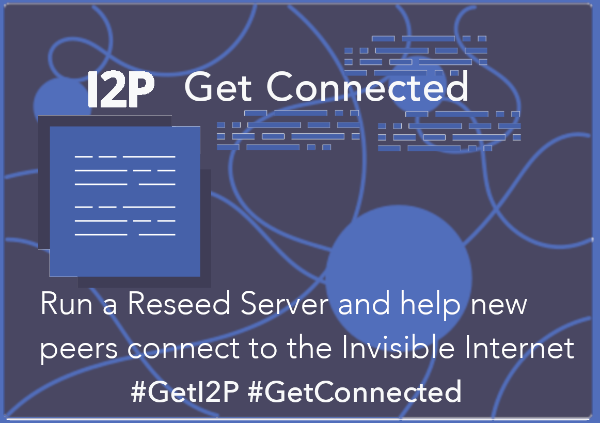

urgentquest/reseed-tools
README
I2P Reseed Tools

This tool provides a secure and efficient reseed server for the I2P network. There are several utility commands to create, sign, and validate SU3 files. Please note that this requires at least Go version 1.13, and uses Go Modules.
Standard reseeds are distributed with the I2P packages. To get your reseed included, apply on i2pforum.i2p.
Dependencies
go, git, and optionally make are required to build the project.
Precompiled binaries for most platforms are available at the github mirror
https://github.com/go-i2p/reseed-tools.
In order to install the build-dependencies on Ubuntu or Debian, you may use:
sudo apt-get install golang-go git make
Installation
Reseed-tools can be run as a user, as a freestanding service, or be installed
as an I2P Plugin. It will attempt to configure itself automatically. You should
make sure to set the --signer flag or the RESEED_EMAIL environment variable
to configure your signing keys/contact info.
Installation(From Source)
git clone https://i2pgit.org/idk/reseed-tools
cd reseed-tools
make build
# Optionally, if you want to install to /usr/bin/reseed-tools
sudo make install
Usage
Debian/Ubuntu note:
It is possible to create a .deb package using these instructions.
Debian users who are running I2P as a system service must also run the
reseed-tools as the same user. This is so that the reseed-tools can access
the I2P service’s netDb directory. On Debian and Ubuntu, that user is i2psvc
and the netDb directory is: /var/lib/i2p/i2p-config/netDb.
Example Commands:
Without a webserver, standalone with TLS support
If this is your first time running a reseed server (ie. you don’t have any existing keys), you can simply run the command and follow the prompts to create the appropriate keys, crl and certificates. Afterwards an HTTPS reseed server will start on the default port and generate 6 files in your current directory (a TLS key, certificate and crl, and a su3-file signing key, certificate and crl).
reseed-tools reseed --signer=you@mail.i2p --netdb=/home/i2p/.i2p/netDb --tlsHost=your-domain.tld
Locally behind a webserver (reverse proxy setup), preferred:
If you are using a reverse proxy server it may provide the TLS certificate instead.
reseed-tools reseed --signer=you@mail.i2p --netdb=/home/i2p/.i2p/netDb --port=8443 --ip=127.0.0.1 --trustProxy